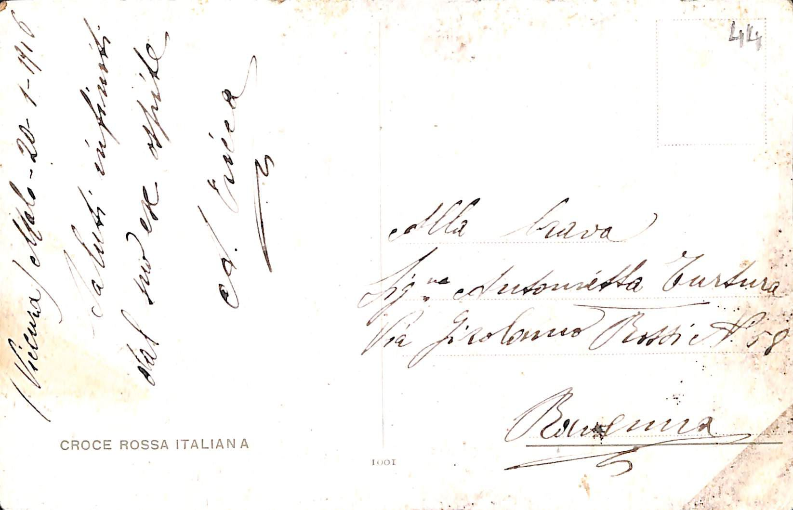
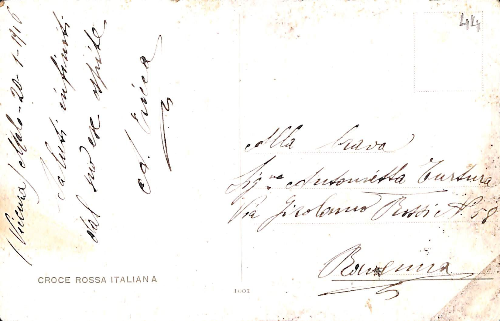

Titolo: [Bambini per mano]
Pubblicato da: Ufficio Revisione Stampa di Milano


Data e luogo: Purgessimo 4-10-[...]
Timbri e Note:
Timbro:
[...]
Francobollo:
Francobollo da 10 centesimi del Regno d'Italia
Note: Il francobollo è stato strappato più in basso della linea pretagliata. Rimangono così visibili le lettere "GLI", parte della scritta "Il mezzo foglio di 200 francobolli".
Note: Il francobollo è stato strappato più in basso della linea pretagliata. Rimangono così visibili le lettere "GLI", parte della scritta "Il mezzo foglio di 200 francobolli".
Timbro:
Verificato per censura
 
